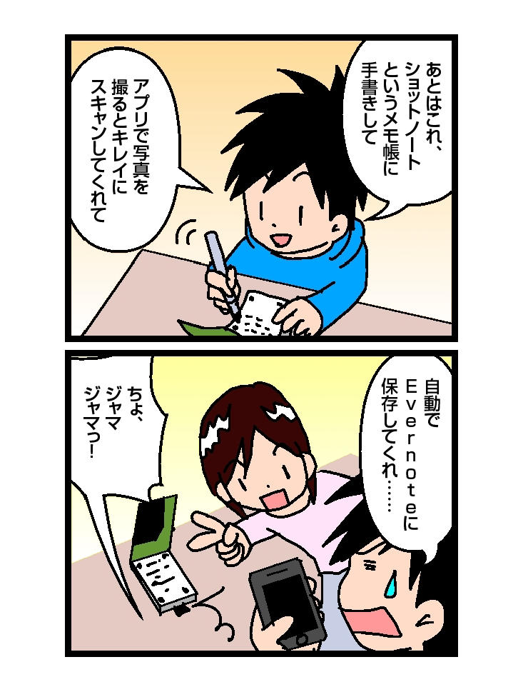
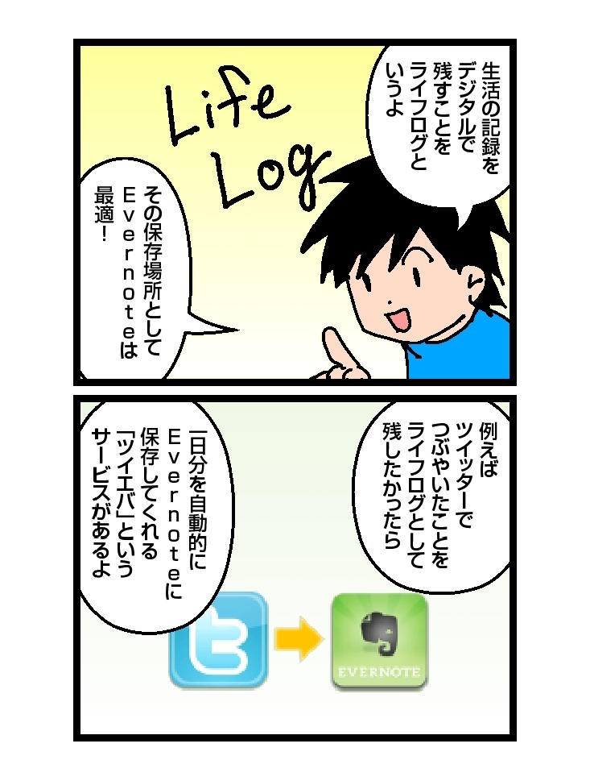
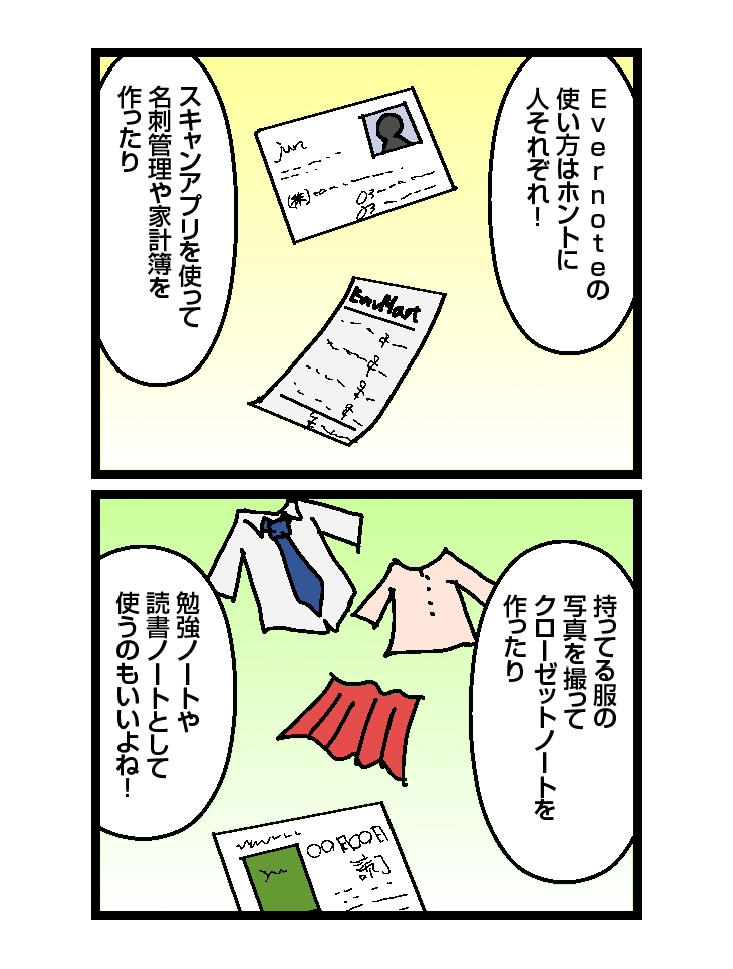

🏠
日
月
縦書き／横書き

| 4コママンガで誰でもわかるEvernote超入門 impress QuickBooks | |
| 岡野 純 | |
| (2012) | |
著者紹介
岡野純
１９８０年４月24日埼玉県出身。本業は医療ＩＴ業界に勤めるサラリーマン。ｉＰｈｏｎｅ、ｉＰａｄ、その他ウェブサービスを利用したライフハックや仕事術を研究し、それを漫画で分かりやすく伝えることに注力したブログ『４コマでわかる！ ＩＴのこと』主宰。ブログメディア『アシタノレシピ』での連載を持つ。
Twitter ID：@jun0424
ブログ：http://jun0424.com/
目次
はじめに
第一章 入門編
▼Ｅｖｅｒｎｏｔｅとはなんだろう？
▼パソコンやスマートフォンにインストールして使おう！
▼ノートを整理しよう！（１）～ノートブックとタグ～
▼ノートを整理しよう！（２）～スタックとリンク～
▼気に入ったウェブページをクリップしよう！
第二章 実践編
▼新聞や雑誌をスクラップしよう！
▼ノートを検索してみよう！
▼手書きのメモを取り込もう！
▼ライフログを残そう！
第三章 応用編
▼プレミアム会員になろう！
▼便利な連携アプリを使おう！
▼いろんな使い方をしよう！
おわりに
解題
奥付
はじめに
第一章 入門編
▼Ｅｖｅｒｎｏｔｅとはなんだろう？
▼パソコンやスマートフォンにインストールして使おう！
▼ノートを整理しよう！（１）～ノートブックとタグ～
▼ノートを整理しよう！（２）～スタックとリンク～
▼気に入ったウェブページをクリップしよう！
第二章 実践編
▼新聞や雑誌をスクラップしよう！
▼ノートを検索してみよう！
▼手書きのメモを取り込もう！
▼ライフログを残そう！
第三章 応用編
▼プレミアム会員になろう！
▼便利な連携アプリを使おう！
▼いろんな使い方をしよう！
おわりに
解題
奥付
最近ではパソコンやスマートフォンを購入すると、Ｅｖｅｒｎｏｔｅというアプリがプリインストールされていることがあります。私の妻もこの夏に初めてスマートフォンを持ったのですが、やはりＥｖｅｒｎｏｔｅのアプリがインストールされていました。しかもどうやらキャンペーン中だったので、プレミアム版がなんと１年間無料で使用できるようなのです。
Ｅｖｅｒｎｏｔｅが何だかよく分かっていない妻は全くそれを使おうとしません。通常月額５ドルを支払っているプレミアムユーザーからすれば贅沢な話です。私は妻に「使いなよ」と諭すのですが、「だって意味が分からない」の一言で一蹴されてしまいます。なんという宝の持ち腐れでしょう。
同じように「Ｅｖｅｒｎｏｔｅって流行っているし便利そう！ でもいまいちよく分からない。なぜ流行っているの？ 何が便利なの？」、そんなふうに思われている方もたくさんいらっしゃるのではと思います。
丁寧に操作法や利用法について書かれたＥｖｅｒｎｏｔｅ入門書というべき本は、書店に行けばたくさん並んでいます。しかしたくさんあるがゆえにどれから読めば良いか分からない。あるいは丁寧さゆえの事細かい設定画面などを見て、どうも取っつきにくい印象を受けてしまう。そして結局今もＥｖｅｒｎｏｔｅには手を出せずにいる。そんな方もいらっしゃるのではないでしょうか。
本書では、Ｅｖｅｒｎｏｔｅの特徴や利用例について４コマ漫画で紹介しています。解説文も付けてはいますが、基本的には漫画を読むだけで内容のニュアンスをお伝えできるように努めています。
「Ｅｖｅｒｎｏｔｅの良さがよく分からない」「Ｅｖｅｒｎｏｔｅを何に使えばいいか分からない」「スマホに入っている象のアイコンの意味が分からない」そんなふうに感じられている方が読んでみたら「Ｅｖｅｒｎｏｔｅを使いたくなってきた！」と感じていただける、またすでにＥｖｅｒｎｏｔｅをお使いの方には「新しい利用法を見つけた！」「家族や知人にＥｖｅｒｎｏｔｅの便利さを伝えてあげたい！」と思える、はたまた純粋に漫画を楽しんでいただける、そんな本にしたいという思いで書き上げました。
コミックを読むような気軽な感覚で本書をお読みいただくことで、Ｅｖｅｒｎｏｔｅという素晴らしいツールへの興味を持っていただけたら幸いです。
２０１１年12月 岡野純
第一章 入門編
▼Ｅｖｅｒｎｏｔｅとはなんだろう？
Ｅｖｅｒｎｏｔｅとはいわゆるオンラインメモツールです。クラウド（ネット上）にメモを置いていつでもどこでもそれを見たり編集したりできるサービスです。
Ｅｖｅｒｎｏｔｅのキャッチフレーズは「すべてを記憶する」です。利用する人の外部脳、第二の脳として機能してみせましょうというものです。Ｅｖｅｒｎｏｔｅがそんな存在たるゆえんは、次のような特徴によるものです。
いつでもどこでもメモできて、それを引き出せる
どのパソコンからでもひとつの場所にメモが残せますし、スマートフォンからも利用できます。もちろん参照だけでなく、編集もできます。
あらゆる種類のデータを保存できる
テキストデータ、ＰＤＦ、画像、音声、動画などデータの種類を問わず一カ所に保存しておくことができます。文章でのメモを残すときはこのソフト、画像を見たいときはあっちのソフトで、なんていうふうにデータの種類によってツールを使い分ける必要がなくなるのです。
いくらでもデータを保存できる
無料会員ですと、１ヶ月にアップロードできる容量の上限が60ＭＢです。１ヶ月経てば上限はリセットされ、また60ＭＢまでアップロードできるようになります。プレミアム会員（月額５ドル）になると、この上限が１ＧＢになります。はっきりいって１ヶ月で簡単に使い切れる容量ではありませんし、翌月になればまた上限はリセットされるわけですから、実質データは無限に保存できるといっていいでしょう。
自動的にデータを保存できる
ツイッターでつぶやいた内容を自動的にＥｖｅｒｎｏｔｅに転送するなど、しかるべき設定をしておくことでデータ保存を自動化することができます。
整理できる
ノートブックとタグなどという仕組みを使って、柔軟にメモを分類整理することができます。
検索できる
任意のキーワードなど様々な条件を組み合わせて検索できるので、簡単に目的のメモを見つけることができます。
以上のように、あらゆる情報を無限に覚えておいてくれてそれを任意に引き出せるわけですから、それはまさに「もうひとつの脳」となりえると思いませんか？
使い方は決して難しくなく、画面もシンプルです。それゆえに様々な利用法があり、可能性は無限大です。だからこそＥｖｅｒｎｏｔｅはこれほどまでに話題になってるんでしょうね。
▼パソコンやスマートフォンにインストールして使おう！
Ｅｖｅｒｎｏｔｅはインターネットで「http://www.evernote.com/」にアクセスしてサインインすれば、そのままブラウザ上で利用することができます。またＥｖｅｒｎｏｔｅにはパソコンやスマートフォンなど、それぞれの端末にインストールして使うことができるクライアントソフトというものもあります。クライアントで書いたメモはインターネットを介して、ウェブ上に同期されます。この仕組みによりどの端末からでも同じデータを参照しにいくことができるんですね。
クライアントはＷｉｎｄｏｗｓ用、Ｍａｃ用、ｉＰｈｏｎｅ用、Ａｎｄｒｏｉｄ用など幅広く用意されています。これがうちの妻のＡｎｄｒｏｉｄにもインストールされていたんですね。プレミアム会員なのに、まだ全然使っていないけれど。
さて、ブラウザではなくクライアントにてＥｖｅｒｎｏｔｅを利用することで、次のようなメリットを得ることができます。
オフラインでも利用することができる
クライアントはインターネットに繋がっていない環境でも起動し、利用することができます。例えば地下鉄に乗っているときにナイスなアイデアを思いついてしまった。そんなときでもスマートフォンのクライアントなら大丈夫。おもむろに起動して、ササッとアイデアをメモしてしちゃいましょう。
クライアントにもデータが残る
クライアントをインストールすると、ウェブ上にしかなかったノートが端末のローカルにもコピーされることになります（スマートフォンではプレミアム会員のみ）。ローカルにノートがあればアクセスも早くなりますし、万が一Ｅｖｅｒｎｏｔｅのサイトにアクセスできなくなってもバックアップがローカルに残っていることになります。ちなみにＥｖｅｒｎｏｔｅ社のＣＥＯであるフィル・リビン氏は「Ｅｖｅｒｎｏｔｅを１００年続く企業に」と宣言されていますので、当分はその心配もないかと思います。
ちなみにクライアントの話から少し外れますが、一般の携帯電話でも機種によってはＥｖｅｒｎｏｔｅを利用できます。「http://evernote.com/m」にアクセスすると「Ｅｖｅｒｎｏｔｅモバイル」が表示されます。利用できる機能は簡単なメモ書き・ノートの閲覧・検索のみです。クライアントもないのでオフラインでは利用できませんが、メモの閲覧、一元化という意味では十分利用できそうですね。
▼ノートを整理しよう！（１）～ノートブックとタグ～
ノートが増えてくると、だんだん自分が管理しやすいように整理したり分類したりしたくなってくると思います。Ｅｖｅｒｎｏｔｅにはノートを整理するための仕組みがいくつかありますが、ここではノート、ノートブック、タグというものについて紹介します。
ノートとは
ノートというのはＥｖｅｒｎｏｔｅの中でのデータの最小単位です。テキストのデータはもちろん、画像や音声のデータもＥｖｅｒｎｏｔｅの中ではノートという呼び方で存在する事になります。
ノートブックとは
ノートがファイルなら、ノートブックはフォルダです。つまりノートを入れておく入れ物です。ノートは必ずどこかしらのノートブックの中に存在する事になります。また、ひとつのノートブックの中に複数のノートを入れることはできますが、ひとつのノートを複数のノートブックに入れることはできません。
タグとは
タグは、ノートに貼る付箋のような役割です。つまりひとつのノートにいくつもタグを付けることもできますし、ひとつも付けなくても構いません。
４コマにも描いた例で考えてみましょう。例えば「オムライス」のレシピのノートを作ったとしますよね。ではこれを「レシピ」というノートブックに入れておきましょう。
やがて、このノートブックの中にもたくさんのレシピがたまってきました。そうなると今度は、材料別とか調理時間とかでレシピを絞り込めると便利そうですよね。これをノートブックだけで分類しようとすると難しくなります。「卵を使ったレシピ」というノートブックと「10分でできるレシピ」というノートブックを作ったとして、オムライスのノートはどちらに入れたら良いのかという『こうもり問題』に陥ることになるからです。
このような時にタグを使うと便利です。オムライスのノートには「卵料理」というタグと「10分でできる」というタグをつけて「レシピ」ノートブックに入れておきましょう。そうしておくと「お腹空いたなぁ。冷蔵庫には卵があるな。パパッと短時間でできる卵料理は何があるかな？」と思ってＥｖｅｒｎｏｔｅのレシピノートブックを覗き、更に「卵料理」と「10分でできる」というタグで絞り込んだらこのオムライスのレシピがすぐに見つかるというわけですね。
ノートブックやタグの作りは後からいくらでも変更できますので、まずはあまり分類は気にせずにどんどんノートを作っていくのがいいかもしれませんね。
▼ノートを整理しよう！（２）～スタックとリンク～
スタックとは
ノートブックも数が増えてきて雑多に並んでいると、目的のノートブックが一目では探しにくくなります。そこで、いくつかのノートブックを任意のグループごとに名前をつけてまとめておこう！ というものがスタックという機能です。
書店での本の並べ方で例えてみましょう。もしひとつの棚にレシピの本、パソコンの本、ファッションの本、漫画などが雑多に並んでたら、目的の本が探しにくくて仕方ないですよね。これらの本は通常、コンピューター系とかコミック系とか、あるいは文庫とか新書といった分類ごとにまとまっていたり、棚が分かれていたりするはずです。
それと同じように、関連性のあるノートブック同士をまとめておける本棚のような役割をするのがスタックです。
リンクとは
インターネットではおなじみだと思いますが、クリックすると別のノートにジャンプすることができる機能です。このノートを見たらこちらも見るといいよ！ というようにノート同士の結びつけをしたいときに役立ちます。
他にも、複数のノートをひとつに結合させるマージという機能などがあります。このようにＥｖｅｒｎｏｔｅには、分類整理のための様々な方法があります。ただ、しつこく申し上げますが、最初からこのような機能を利用した分類整理にこだわる必要はありません。せっかくアイデアを思いついたけど、分類に迷った挙げ句に結局面倒だからメモを残すのを止めてしまった、という事態になっては本末転倒です。
それでもちゃんと整理したい、という方にオススメのワザがあります。「Ｉｎｂｏｘ（受信トレイ）」という、ノートの玄関口となるノートブックを用意する方法です。どのようなカテゴリのノートであっても、まずは何も考えずにこの「Ｉｎｂｏｘ」ノートブックに保存するというルールにします。そして例えば１日１回、もしくは週に１回このＩｎｂｏｘの中を見直して、そのタイミングで初めてノートを分類整理するのです。そうすれば例え見直しを忘れてしまっても、Ｅｖｅｒｎｏｔｅにノートが保存されていることには変わりないという安心を得られます。どこに分類するか、そもそもこのメモは必要なのかといったことも考えずとにかく保存してしまったほうがいいと思います。保存さえされていれば分類することも捨てることも後でいくらでもできます。そうしてるうちに自分なりのＥｖｅｒｎｏｔｅの使い方も見えてくると思いますよ。
▼気に入ったウェブページをクリップしよう！
インターネットで今見ているページを保存しておこうと思ったら、ブックマーク（お気に入り）に登録することが多いですよね。Ｅｖｅｒｎｏｔｅの「ウェブクリップ」という機能は、それとよく似ています。インターネットで見ているページをボタンひとつでＥｖｅｒｎｏｔｅのノートとして保存できるというものです。ですが、通常のブックマーク機能とは異なる点がいくつかあります。
元サイトが消えても大丈夫
いくらお気に入り登録していても、もしブックマーク先のサイトが閉鎖してしまったらもうそのページは二度と見ることができなくなってしまいます。しかしＥｖｅｒｎｏｔｅのウェブクリップは、クリップした時点でそのページのテキストや画像をそのままＥｖｅｒｎｏｔｅの中に保存します。そのため、もし元サイトが無くなってしまっても自分のＥｖｅｒｎｏｔｅの中にはページが残っていることになるんですね。
選択部分だけクリップできる
ブックマークは当然ながらそのページ全体をお気に入りとして登録しますが、ウェブクリップは保存する範囲を指定することができます。例えばブログの記事部分をクリップしたいのに、左右に表示されている広告とか一緒にクリップされても正直邪魔ですよね。また記事全体ではなく、その中の一文だけをクリップしておきたい！ という時もあると思います。その時にはその部分を選択してからクリップボタンを押せば、ちゃんとその一文だけがＥｖｅｒｎｏｔｅに保存されます。
メモを残せる
そのページをクリップしたということは、何かしらの感情を持ったりアクションを起こそうと思ったからだと思います。この文章にグッときたなーとか、これは後で真似しようとか思っていても、ただページだけを保存したのでは後でノートを見返したときに忘れてしまっている可能性があります。そこで、ウェブクリップ時にはコメントを残しておくようにしましょう。こうすることでグーグルでは検索できない、オリジナルの情報ページとして残るわけですね。
検索できる
ブックマークしたページの中から任意のキーワードに関するページを抜き出すのは難しいですが、Ｅｖｅｒｎｏｔｅにクリップしたものであればそれも検索可能です。更にクリップ時にコメントを残しておけばそれももちろん検索対象になります。
一度関心を持ったページはまた見返したくなる可能性が高いです。迷わずどんどんクリップしていきましょう。
第二章 実践編
▼新聞や雑誌をスクラップしよう！
昔は新聞や雑誌のスクラップといえば、カッターなどで切り抜いて、糊でノートやスクラップブックに貼って保存......というのが普通でした。今はＥｖｅｒｎｏｔｅを使えば糊もカッターも使わずに、そういったアナログ媒体の情報をデジタルデータとして保存しておくことが可能です。いくつかの方法を紹介します。
写真を撮る
一番簡単な方法は、新聞記事などを写真に撮ることです。スマートフォンのカメラなどで撮影して、そのままＥｖｅｒｎｏｔｅ専用のメールアドレスに送ればその画像がノートとして保存されます。ただ、単純に写真を撮ったのではきれいな画像にならず、肝心の文字が読めないという場合もあるでしょう。そこでオススメなのが次に紹介する方法です。
スキャンアプリを使う
スマートフォンにはスキャナアプリというものがあります。このアプリを使って記事などの写真を撮ると、画像の明るさ調整・コントラスト調整・ノイズ除去などを自動で行ってくれるので、まるでスキャナーで取り込んだようにきれいで見やすい画像になります。アプリによってはそのままＥｖｅｒｎｏｔｅに保存してくれるものもあります。
ＳｃａｎＳｎａｐを使う
スキャナアプリや普通のスキャナーを使うという方法で十分きれいなデータにはなりますが、基本的に書類を一枚一枚スキャンしなくてはいけません。ですから書類の量が多くなるとこれらのやり方ではなかなか手間がかかります。「スキャンするのは面倒だな......」という気持ちが生まれてしまうと長続きせず、結局再び手元に雑誌や新聞が溜まっていってしまうことになります。作業を継続するには、いかにストレスフリーに行うかが重要なポイントとなってきます。
そこで役立つのが、ドキュメントスキャナーというものです。代表的なものにＳｃａｎＳｎａｐという機種があります。ＳｃａｎＳｎａｐというのは通常のスキャナーと違い、書類の束を乗せてボタンを押すだけで１分間に両面約20枚の書類をスキャンし、Ｅｖｅｒｎｏｔｅに保存してくれます。これを使うと雑誌、名刺、写真など手間なくどんどん取り込めますので、一気に部屋の中のかさばる資料を片付けることができるかもしれません。また、本を裁断してからスキャンすることで手持ちの本を電子書籍化させる、いわゆる「自炊」という作業のためにも、このＳｃａｎＳｎａｐは不可欠なアイテムです。
▼ノートを検索してみよう！
Ｅｖｅｒｎｏｔｅは検索能力がとにかく優れています。たとえノートブックやタグでの分類整理をほとんど行わなかったとしても、検索によって目的のノートが探し出せるのでそれほど問題にはなりません。検索方法にもいくつかの方法や特徴がありますので、紹介していきます。
キーワードで検索する
Ｅｖｅｒｎｏｔｅの中には検索窓がありますので、そこに任意の文字を入れればノートを検索することができます。入力した文字に対して、検索結果はリアルタイムに表示されていきます。ノートに含まれる文字列だけでなくそのノートに付いているタグも検索対象となってくれますので、関連性のあるノートをもれなく見つけることができます。また目的のノートがどのノートブックに含まれているかが分かっているときは、あらかじめノートブックを指定してから検索することでそのノートブック内だけで検索を行うこともできます。
属性情報から探す
Ｅｖｅｒｎｏｔｅの中のノートは、自動的にさまざまな種類の「属性情報」を持っています。たとえばノートの作成日や更新日。それから画像を含むノートなのか音声を含むノートなのか。またスマートフォンからノートを作成した場合などには位置情報を含むこともできますので、どこに行ったときに作成したノートなのか？ といった情報から簡単にノートを探しだすことができます。
「保存された検索」機能を使う
うまく検索条件を組み合わせればかなり詳細な条件でノートを絞り込むことができます。そして、もしまたその条件で検索をしたくなったときのために、その検索条件に名前をつけて「保存」をしておくことができます。そうすることで、今後は「保存された検索」からそれを選択するだけで、複雑な検索をワンクリックで行うことができるようになります。
文字認識機能を使う
Ｅｖｅｒｎｏｔｅの特徴と言える機能が、「画像内文字認識機能」です。これはテキストだけではなく、画像の中に含まれる文字までＥｖｅｒｎｏｔｅが検索対象としてしてくれる画期的な機能です。たとえば名刺をスキャンしておけば、あとで会社名やその人の苗字で検索をかけたときにちゃんとその名刺が検索結果にひっかかってくれます。新聞や雑誌の記事をスキャンしておけばその記事に含まれるキーワードで検索ができますし、ホワイトボードに書いた議事録や手書きのメモも検索対象とすることができます。

▼手書きのメモを取り込もう！
パソコンを使えないときや図や表を描くときなど、紙に手書きのメモを残すといった機会はまだまだ多々あります。そのようにして残したメモを紙のままにしておくと、内容を忘れたり紛失したりする恐れがありますので、これらのメモも以下のようなツールを使ってＥｖｅｒｎｏｔｅに保存しておきましょう。画像として保存しておけば先に述べたような画像内文字認識の恩恵を受けて検索に引っかけることも可能になってきます。
ＳＨＯＴ ＮＯＴＥ（ショットノート）
ＳＨＯＴ ＮＯＴＥとは、オフィス文具でおなじみのキングジムから発売されているメモ帳、およびそれと連携するアプリの名称です。メモ帳のほうは、本当に一見ただの紙のメモ帳です。適当なペンで、文字でもイラストでも自由に書けます。ちょっと変わっているのは、まずページの四隅にマークがあること。それからページの上のほうに「Ｎｏ．」と「ＤＡＴＥ」を書く欄があるのですが、それをデジタル数字で書くようになっているところ。デジタル時計みたいな８の字型のカクカクした数字です。
これをスマートフォンのＳＨＯＴ ＮＯＴＥアプリで撮影してみましょう。すると四隅のマークにより、メモ帳が画面ぴったりにおさまるように自動補正してくれて、まるでスキャンしたようにきれいに画像を取り込むことができます。また、「Ｎｏ．」と「ＤＡＴＥ」はＯＣＲ機能がはたらくので文字情報として認識されます。あとは任意でタグなどをつけて、そのままＥｖｅｒｎｏｔｅに送るだけです。アナログなメモ帳をそのままデジタルデータに移行できる手軽さがうけて、非常に人気のあるＥｖｅｒｎｏｔｅ関連商品です。
ａｉｒｐｅｎ Ｐｏｃｋｅｔ（エアペンポケット）
ａｉｒｐｅｎ Ｐｏｃｋｅｔとは、これまた文具メーカーのぺんてるが開発したデジタルペンです。これもまた一見普通のボールペンです。インクがなくなったら市販のリフィルで交換することができます。ボールペンとセットで付いてくるのが、メモリーユニットという小さな受信機です。このユニットをクリップで取り付けた紙にペンで文字やイラストを書くと、ペンから発せられる筆跡データをユニットが受信し記憶します。そのデータはユニットのボタンを押すことで、Ｂｌｕｅｔｏｏｔｈ経由、つまりワイヤレスでパソコンに転送することができます。もちろんＥｖｅｒｎｏｔｅに保存することもできます。

▼ライフログを残そう！
ライフログとは、日常の出来事や感情をデジタルデータとして残しておいて後で参照できるようにしておくことをいいます。それを残す場として、あらゆるデータを半永久的に保存できるＥｖｅｒｎｏｔｅというサービスはうってつけです。
ツイッターでのつぶやきを保存する
何々を食べたとか、どこどこなうといったツイッターでのつぶやきは立派なライフログです。しかしツイッターでの発言は一定の件数を超えると古いものから消えていってしまいますので、Ｅｖｅｒｎｏｔｅに保存しておきましょう。
とは言うものの、ツイートをわざわざコピーしてＥｖｅｒｎｏｔｅにペースト、などということをいちいちやってはいられません。そこで、『ツイエバ』というウェブサービスを利用しましょう。ツイエバはツイッターでのツイートを取得して、一日分のツイートをひとつのノートにまとめてＥｖｅｒｎｏｔｅに送るという一連の動作を自動で行なってくれます。アイコンや画像なども含めたとても見やすい形でツイートを残しておけます。
写真でライフログを残す
写真はこの上ないライフログです。写真の中に写る風景、表情、雰囲気などはテキストではとても表現しきれないほどの情報量を持っています。しかし「デジカメで写真を撮ってパソコンに取り込む」という動作を面倒に感じてしまうと、結局あまり写真を撮らないという状態になってしまい、非常にもったいないです。
そこで便利なのが、Ｅｙｅ－ＦｉというＳＤメモリーカードです。一見普通のＳＤカードですが、カード自体が無線ＬＡＮの機能を持っています。これをセットしたデジカメで写真を撮ると、自動的にワイヤレスでパソコンやＥｖｅｒｎｏｔｅなどのサービス上に写真を転送してくれます。いちいち写真転送のためにカメラをケーブルでパソコンに接続したり、ＳＤカードを抜き差ししたりする手間がなくなるというわけです。カード自体に保存されたデータは容量が一杯になったら古いものから自動的に消していってくれますので、自分で削除をする手間も無くエンドレスで写真を撮り続けることができます。
こういったことができるようになると、ためらわずにツイートをしたり写真を撮ったりということができるようになります。思い出が鮮明に甦るように、どんどんライフログとなるツイートや写真を残していけるといいですね。
第三章 応用編
▼プレミアム会員になろう！
Ｅｖｅｒｎｏｔｅはいつまででも無料で使い続けることができます。無料のままでも十分な機能を利用することはできますが、有料（月額５ドル、年額45ドル）のプレミアム会員になるとさらに便利な機能を利用することができます。
１ヶ月のアップロード容量が増える
無料版では１ヶ月にアップロードできる容量は60ＭＢです。テキストでのノートがメインであればこれで間に合うかもしれませんが、写真や音声のノートを継続的にアップするような使い方になってくると物足りなくなってくると思います。また、残りの容量を気にしてしまうとアップするノートの取捨選択を迫られてしまうことになり、時間も機会も失いかねません。容量そのものよりも、そうしたリスクの方が大きいです。プレミアム会員になると、１ヶ月にアップロードできる容量が１ＧＢまで増えますので、かなり余裕を持って使うことができます。
ＰＤＦの中を検索できる
Ｅｖｅｒｎｏｔｅで検索をかけたときに、ＰＤＦファイルの中身の本文まで検索対象にしたいと思ったらプレミアムアカウントが必要になります。これは非常に便利な機能です。Ｅｖｅｒｎｏｔｅに保存さえしておけば、まさに見つからないものはなくなると思います。
スマートフォンでのオフライン機能
電波の届かない場所で、スマートフォンでＥｖｅｒｎｏｔｅの中身を参照するにはプレミアムアカウントのオフライン機能が必要になります。どんなときでも参照したいノートがある、というような場合はこの機能を使ってそれらのノートをスマートフォンにダウンロードしておくと便利です。
ノートブックの共有機能
Ｅｖｅｒｎｏｔｅでは特定のノートブックを他の人と共有できる機能があります。共有すると複数人でひとつのノートを閲覧したり、編集し合ったりすることができます（閲覧だけは無料アカウントでも行なえます）。共有する相手は特定の相手のみということもできますし、世界中に向けて公開ということも可能です。誰かとこまめに情報交換をしたり、制作活動するときなどに役立ちそうですね。
これ以外にもプレミアムアカウントならではの機能がたくさんあります。プレミアムアカウントへの移行はいつでもできますしいつでも解約が可能です（契約済みの月額及び年額はかかります）。まずは数ヶ月無料版のまま使用してみて、物足りなさを感じ始めたらプレミアムへの移行を検討してみてはいかがでしょう。
▼便利な連携アプリを使おう！
先に紹介したスキャナアプリやＳＨＯＴ ＮＯＴＥもそうですが、スマートフォンのアプリにはＥｖｅｒｎｏｔｅと組み合わせて使うということができるものがあります。連携可能なアプリをうまく活用することで、Ｅｖｅｒｎｏｔｅの便利さをさらに引き出すことができます。
ＦａｓｔＥｖｅｒ（ファストエバー）
ＦａｓｔＥｖｅｒとは、素早くＥｖｅｒｎｏｔｅのノートを作成することに特化したアプリです。起動するとすぐにメモを書ける状態になり、書き終わったら「保存」ボタンを押すだけ。メモの１行目が自動的にノートのタイトルになりますし、保存先のノートブックや付けるタグを指定しておくこともできます。
Ｅｇｒｅｔｌｉｓｔ（イーグレットリスト）
Ｅｖｅｒｎｏｔｅではチェックボックス付きのノートを作ることができます（ＦａｓｔＥｖｅｒからも作れます）。Ｅｇｒｅｔｌｉｓｔは、チェックボックスの入ったノートだけを同期してくれるので、ＴｏＤｏやチェックリスト管理アプリとして利用することができます。とてもオシャレな見た目と、Ｇｏｏｇｌｅカレンダーと連携できる点も魅力です。
Ｎｏｚｂｅ（ノズビー）
こちらもタスク管理アプリです。Ｅｇｒｅｔｌｉｓｔと違いタスクはＥｖｅｒｎｏｔｅではなくＮｏｚｂｅ側に登録する形になります。便利なのは、そのタスクに関連する資料としてＥｖｅｒｎｏｔｅのノートを結びつけられることです。ＧＴＤ（作業を明確化して逐次処理できるような仕組みを持った仕事術）の考え方に適した非常に人気のあるツールです。
ＦａｓｔＥｖｅｒ Ｓｈａｒｅ（ファストエバーシェア）
Ｂｕｍｐ（ｉＰｈｏｎｅを持った手同士をぶつけ合うこと）することで、特定のノートを相手とやり取りできるというアプリです。プレミアムアカウントの共有機能同様に、Ｅｖｅｒｎｏｔｅの中身を情報交換に利用することができます。
ＡＴＯＫ Ｐａｄ（エイトックパッド）
非常に高い変換精度と推測変換などの機能により、長文でもスムーズな文字入力を行うことのできるアプリです。そして書いたメモは、Ｅｖｅｒｎｏｔｅの「ＡＴＯＫ Ｐａｄ」というノートブックと高速で同期することができます。少し高価なアプリですが、スマートフォンとパソコンの双方でノートの編集をしていけるのが便利です。私もこの本の文章部分はほとんどこの方法で書き上げました。
Ｓｋｉｔｃｈ（スキッチ）
写真やスクリーンショット画像に、手書きの注釈や図表を直感的に描画することができるアプリです。画面説明を含んだブログ記事を書いたり、Ｅｖｅｒｎｏｔｅに保存されていた地図や写真に目印を書き加えて友達に送信というような使い方ができそうですね。

▼いろんな使い方をしよう！
Ｅｖｅｒｎｏｔｅは特に決まった使い方というのはなく、10人いたら10通りの利用法が生まれるくらい自由で応用の利くツールです。それゆえに、何に使ったらいいのか途方に暮れてしまう人も少なくありません。ここではこれまで紹介した機能を踏まえ、Ｅｖｅｒｎｏｔｅの具体的な利用例をいくつか紹介していきます。
名刺管理
名刺はＳｃａｎＳｎａｐやスキャンアプリで取り込んでおくだけで、あとは画像内文字認識により名字や会社名で検索をかけることができます。これらをそのまま「名刺」というノートブックに放り込んで五十音のタグをつけておけば、瞬時に目的の名刺を探し出すことが可能です。これでもうかさばる名刺の束を持ち歩かなくて済みます。
レシピノート
ネットで検索するとレシピはたくさん見つかりますが、その中でも自分のレパートリーとして使えるものはＥｖｅｒｎｏｔｅに保存しておきましょう。食材や料理カテゴリ、調理時間などのタグをつけておくとシチュエーションに応じてメニューを探すことができそうです。分かりにくい部分は写真を撮っておいたり、共有機能を使って友達とレシピを交換し合うのも楽しそうですね。
読書管理
欲しい本があったら、その本のＡｍａｚｏｎページをウェブクリップし、これを「欲しい本」というノートブックに入れておけば、書店を訪れたときに自分が買おうと思っていた本の一覧をスマートフォンで確認することができます。そして読み終わったら、そのノートに感想や書評、印象に残った一文などを書き加えて、「読んだ本」ノートブックに移動させておきましょう。「自己啓発」や「ライフハック」などのジャンルをタグとしてつけておくと、後で参照する事ができるオリジナル資料の完成です。
勉強ノート
テキストや問題集をそのままＰＤＦ化してしまえば、スマートフォンひとつでどこでも勉強することが可能になります。また、「暗号化」というテキストの一部を隠す機能もあります。覚えたい用語の部分などをこの機能で虫食い状態にしておいて、パスワードを入れると答えが見える、というような暗記法にも利用することができます。英語の発音などを音声ノートとして保存しておくのもいいですね。
Ｅｖｅｒｎｏｔｅの利用法はまさに無限大です。これらをヒントにぜひみなさんなりの活用方法を見つけてみてください。
２０１０年３月より、「４コマでわかる！ ＩＴのこと」というブログを書いています。「４コママンガで分かりやすく伝える」というコンセプトのもとに、色々なウェブサービスやライフハック（ＩＴツールを使うことによって効率良く仕事や生活をするテクニック）について紹介するというブログです。「使ってみたら意外と簡単だし便利！」というウェブサービスやライフハックはたくさんあります。ただそういったものの存在を知る機会がなかったり、知ったところで「なんだか難しそう」というイメージを先に持たれてしまうことがあります。それは非常にもったいないことだと感じました。
そんな「とっつきにくそう」という壁を取っ払うためにはどう伝えれば良いだろうと考えた挙げ句に、私なりに思いつき始めたのがそのブログです。マンガで物事を説明するというのは私が思っていた以上の効果があったようで、「ダントツで分かりやすい」、「ＩＴが苦手な友人に薦めておきました」などの嬉しいご感想を数多くいただきました。
Ｅｖｅｒｎｏｔｅは、そんなふうに「とっつきにくそう」という誤解をされやすいツールのひとつかもしれませんが、実際にはＩＴに長けた人だけが使いこなせるというツールでは決してありません。非常にシンプルで、誰でも使うことができます。それなのにどう使って良いか分からずに放置されてしまったり、とっつきにくそうというイメージが先行してしまって触られないままになってしまうことがあるようです。
そんなＥｖｅｒｎｏｔｅに対する壁を無くして、もっと広く多くの方にＥｖｅｒｎｏｔｅというものに気軽に触れてみていただけるような本を作りたい。今回電子書籍制作のお話をいただいたときに思いついたのはそんな思いでした。とはいえ具体的な設定や操作の方法については他の入門書にお任せするとして、本書ではＥｖｅｒｎｏｔｅとは何なのか、どんなことができるのかという雰囲気をとにかく感じ取っていただくことを目的としました。そしてそのために最適な方法が、私のブログと同じく「４コマで伝えること」だと思いこのような形式を取らせていただきました。
私が今回このような電子書籍出版という機会をいただくことができたのは、ブログやツイッターで知り合った方々たちのおかげです。それから本書の制作を全力でサポートしていただいたデジタルハーベストの矢野健太郎さん、シゴタノ！の大橋悦夫さん、そして４コマにも登場してもらいマンガとさほど変わらぬキャラクター性でもって応援してくれた妻に感謝の言葉を申し上げたいと思います。ありがとうございました。
誰しも、長く使い続けて「これはいい！」「鉄板だ！」と絶賛している商品やサービスが１つや２つはあるでしょう。頼まれもしないのに、ことあるごとに友人や知人にしたり顔で“営業”を繰り返す、いわゆるエヴァンジェリストはどの世界にもいるものです。
ブログやソーシャルメディアという伝播ツールの充実がこの傾向に拍車をかけています。
人に何かを伝えるうえで、ハードルになるのが言語化能力でしょう。「こんなにいいサービスなのに、なぜ分かってもらえないのか！」という歯がゆさは、頭の中に思い描くことができている鮮明なイメージが、実際に口に出して説明したり、文章に直して人目にさらしたりした時に、著しく劣化、相手に本来とは異なる解釈をされてしまうことによって生じます。
そのせいで、せっかくの優れた商品やサービスが、それを本当に必要としている人のもとに届かない、という悲劇がそこかしこで繰り返されてしまっているのです。
ブログでどれだけ記事を量産しても、飽きるほど繰り返しツイートしても、伝わらないことは伝わらないのです。
本書のテーマはＥｖｅｒｎｏｔｅですが、このサービスもまた、その良さを伝えるのが難しいものの１つです。原因はさまざまですが、一番は一人一人が自分の使い方を見つけるところにその良さがあること。
つまり、しばらく使ってみて初めて「あ、自分にとってはココがツボなんだな」ということが分かってくるという、やっかいなことになっているのです。
そんな、「使って満足している人」と「使わずに一生を終える人」との間に横たわるミゾを埋めるべく書かれたのが、否、描かれたのが本書です。
言葉での説明はロジカルな理解を求めますが、マンガというビジュアルでのプレゼンテーションは直感的な共感を喚起します。言い換えれば、説明だけでは説明のつかない体験というものを擬似的に味わってもらうことができるのです。
......などと言葉で説明しようとしてしまっている自分に気づきましたが、ここまで読んでいただいた皆さんは、すでに体験済みのことと思います。
すでに実感されている通り、今まで何となく理解していたモノクロのフレームワークに、ビジュアルな色づけが上乗せされて、視野がくっきりと開けたのではないでしょうか。
Ｅｖｅｒｎｏｔｅを知らない人からＥｖｅｒｎｏｔｅのざっくりとした説明や便利な使い方を求められたら、ぜひ本書を見せてあげてください。そのためにもお持ちのモバイルデバイスにはいつも本書を忍ばせておいてくださいね。
シゴタノ！管理人 大橋 悦夫
４コママンガで誰でもわかる
Ｅｖｅｒｎｏｔｅ超入門
Ｅｖｅｒｎｏｔｅ超入門
人生のメモリ装置を使いこなそう
発行日 平成24年２月28日
著 者 岡野 純
発行者 香月登・北川雅洋
発 行 株式会社デジカル
〒１６０―００２２ 東京都新宿区新宿２－16－９ 新宿五城ビル３Ｆ
http://www.digical.co.jp/
（本の内容に関するお問い合わせ先）
ＴＥＬ ０３－３３５３－５１７１
ＦＡＸ ０３－３３５３－５１７２
株式会社インプレスコミュニケーションズ
〒１０２－００７５ 東京都千代田区三番町20
(C) Jun Okano 2012 Printed inJapan
制作 株式会社デジカル
オーサリング 藤原印刷株式会社
カバーデザイン 萩原弦一郎（株式会社デジカル）
企画協力 矢野健太郎（株式会社デジタルハーベスト）
マンガ 岡野純